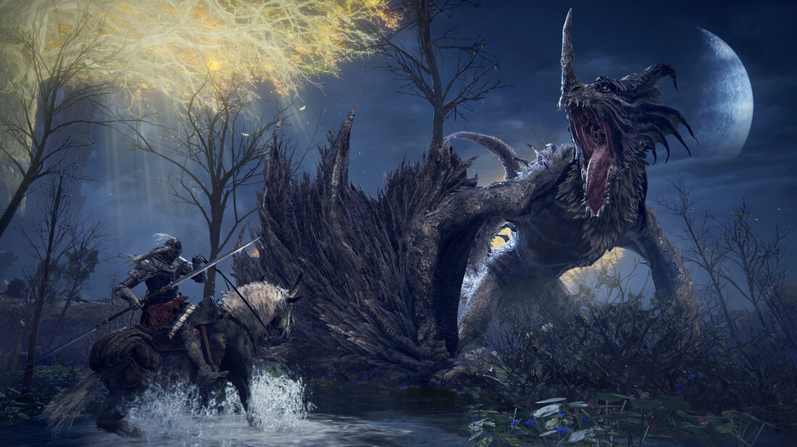
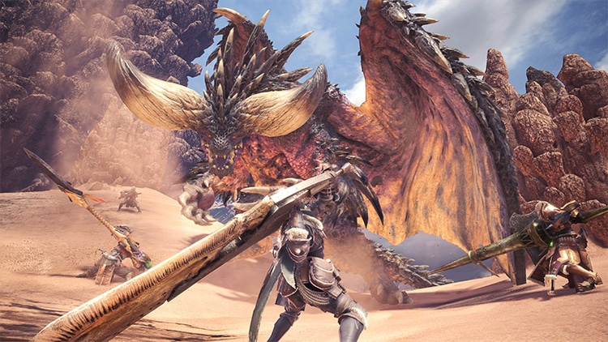
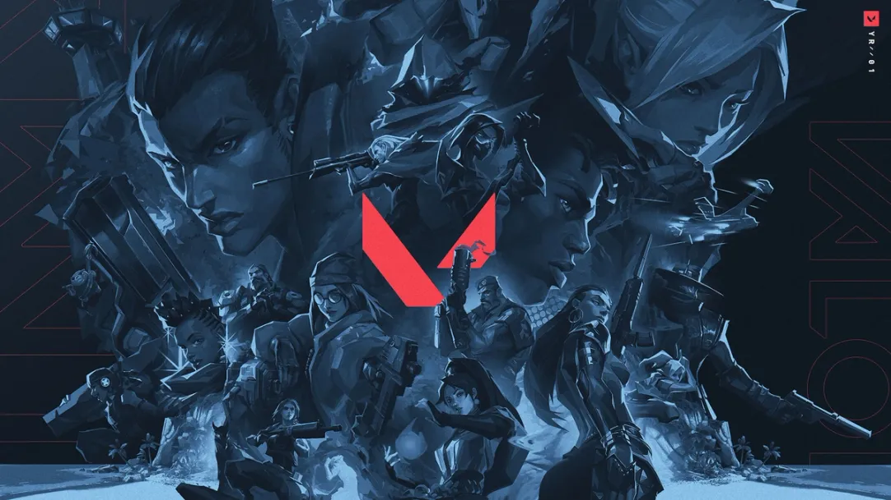
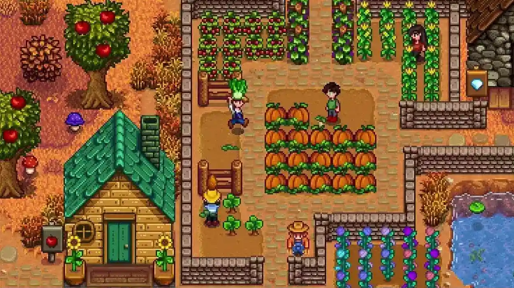

Elden Ring

Um dos jogos mais divertidos que eu tenho, a possibilidade de montar várias builds, explorar o mundo e descobrir sobre ele sozinho e os bosses dá uma sensação de liberdade muito prazerosa. Jogueu muito em muito pouco tempo, ele fica numa lista de "jogos que eu enjoei por jogar muito" mas não deixa de ser bom, um dia eu finalizo.
Monster Hunter World

Me diverti muito jogando, passei horas de muitas noites jogando, de novo "muito em muito pouco tempo" (isso vai se repetir mais do que eu gostaria) mas não deixa de ser bom, comprei ele junto de um outro jogo que sofre da mesma lista. Foram os primeiros jogos que comprei. Voltarei a jogar, mas acho mais fácil pegar o jogo mais atual da frânquia, o Wilds.
Valorant

Relação de amor e ódio com este jogo. Já fui viciado por um tempo, mas sempre paro de jogar por meses a fio. Jogo desbalanceado,bugado, tóxcioporem é divertido, algumas pessoas são legais. NÃO JOGUE ESTE JOGO.
Minecraft
Pra alguns é um jogo de criança, mas pra mim é um mundo de possibildades e demonstração de desperdício de pontêncial. Tenho horas nesse jogo e o que me move a jogar ele é fazer casas, terminar um mundo gigante e muito bonito.
Stardew Valley

Meu ápice neste jogo foi a muito tempo, quando a ainda jogava pelo celular, foi uma experiência sem igual, sério. Hoje jogo no PC com uns amigos e isso torna tudo muito mais divertido. Caso vá jogar eu lhe dou um conselho, não se preocupe em fazer tudo perfeito ou em não fazer nada, leve seu tempo.